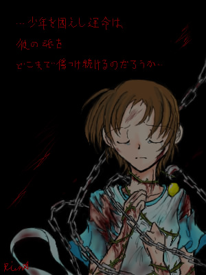

面倒なので前置きカッティング。
現ＴＯＰ絵のフィルタを薄くしたバージョンです。
…ＴＯＰにあるんだから警告いらないよなぁ？；
バッチ来い、な方はスクロールでどうぞー。
…もしかしたら今後の展開の微ネタバレかもしれません。
色々妄想したって下さい。直接的な繋がりは無いのですが…。
――†――――――――――――――――――――――――†――
その闇の名は “彼の運命”
その鎖の名は “彼の宿命”
誰にも気付かれることの無い真っ暗な闇色の鎖
闇を抱く当人ですら、その鎖の名を覚えてはいない
「 」
その名が彼の中に蘇る時
静かに闇の中に潜んでいた鎖が 再び解き放たれるだろう
運命に傷つけられ 魂が血を流しても
決して逃れようとは願わず
むしろその中にあることを望み
戦い続ける少年の未来に
運命の女神は微笑んでくれるのでしょうか
「 いつか 」
「 」
「 その日まで 」

逃げる事は許されず
そしてまた
望まれず――
「 この身が幾度血を流そうとも 」 .
. 「 その約束が此処に在る限り 」